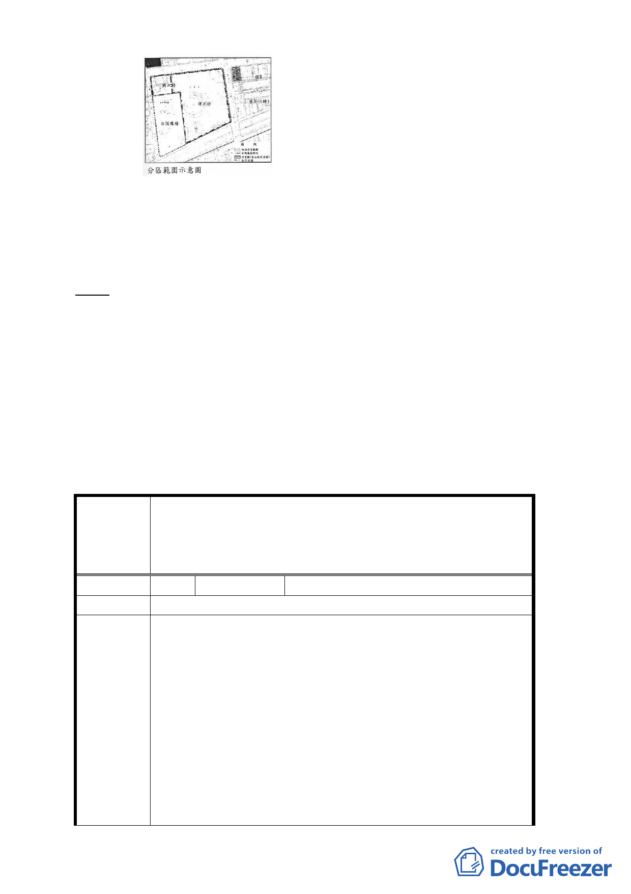

八、 公民或團體所提意見：計11件。
九、 辦理單位：臺北市政府。
十、 法令依據：都市計畫法第27條第1項第3款。
決議：
一、 本案依都市發展局所提修正計畫書及本次補充會議資料修正
通過。
二、 另陳情有關本案土地使用項目與強度等項，仍依市府80年2
月13日公告都市計畫規定辦理。
三、 公民或團體陳情意見審決如後附綜理表。
臺北市都市計畫委員會公民或團體所提意見綜理表
修訂「『修訂台北市土地使用分區(保護區、農業區除外)
案
名
計畫(通盤檢討)案』內有關八德路四段、東寧路、縱貫鐵
路、八德路四段 106 巷所圍地區(原唐榮鐵工廠)土地使用
計畫案」開發方式細部計畫案
編 號1
陳情位置
陳情人 威○開發投資股份有限公司
陳情理由
1. 本公司依臺北市政府 80 年 2 月 13 日府工二字第
80003366 號函公告「修訂臺北市土地使用分區（保護
區，晨業區除外）計畫（通盤檢討）案內有關八德路四
段、東寧路，縱貫鐵路，八德路四段 106 巷所圍地區
（原唐榮鐵工廠）土地使用計畫案」第 4 頁之內容，取
得全街廓整體開發之權利，係因為本公司歷經多年規劃
並付出鉅額成本所得之結果，現臺北市都發局未經過任
何協商程序，亦未做出具體補償條件之提議，即以臺北
市政府 102 年 9 月 12 日府都規字第 10235776100 號公
告公開展覽之「修訂『修訂臺北市土地使用分區（保護
區、農業區除外）計畫（通盤檢討）案』內有關八德路
- 10 -